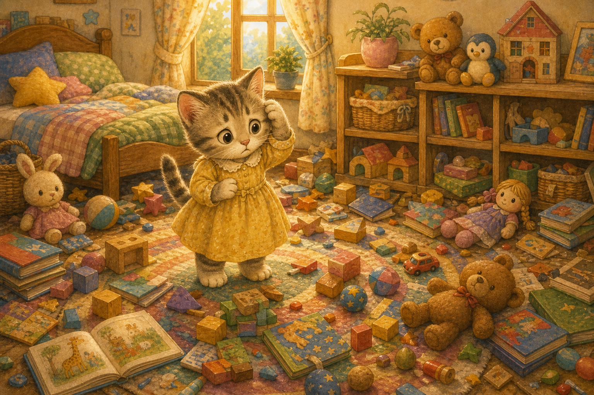
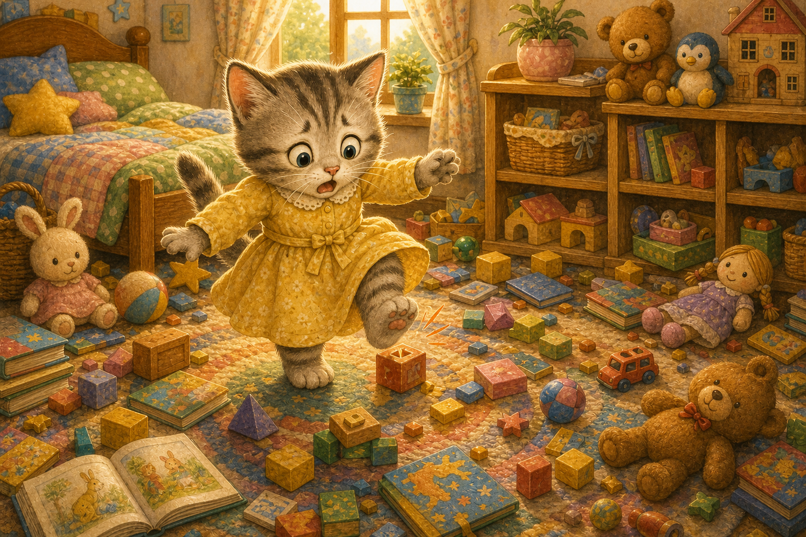
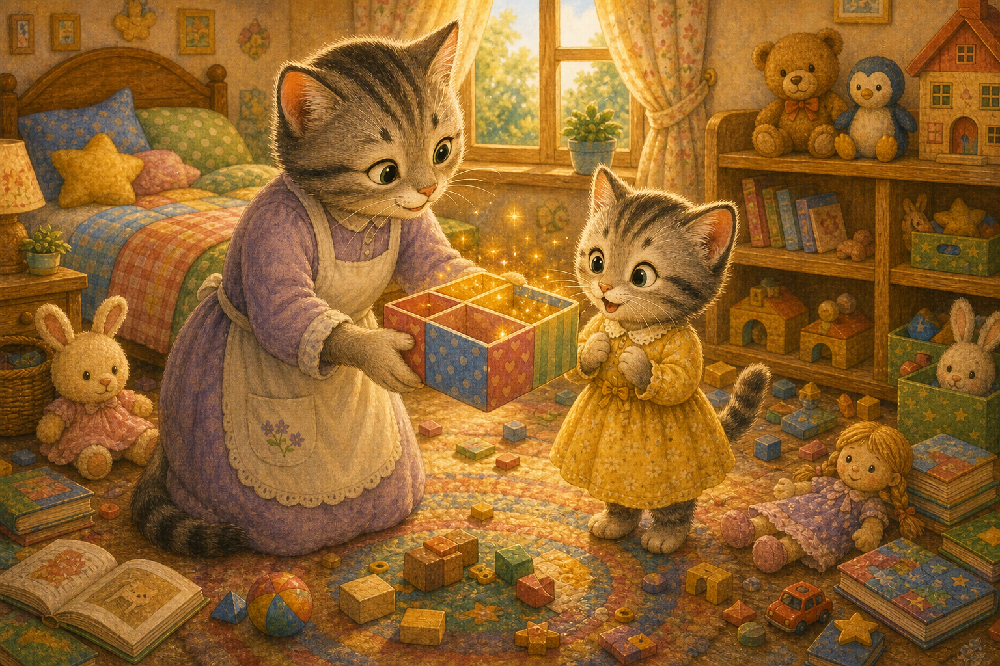
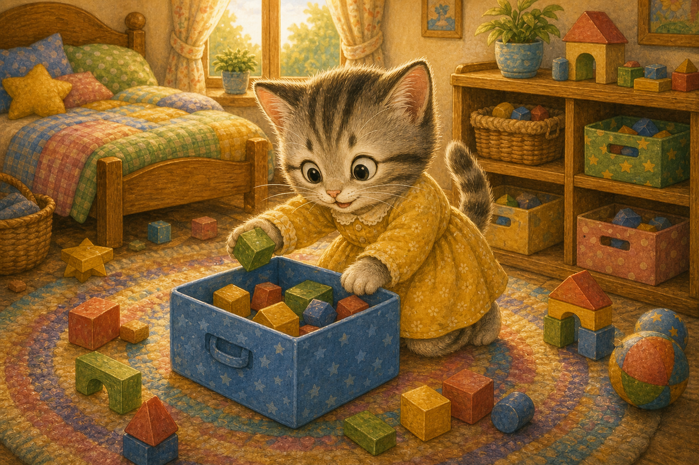
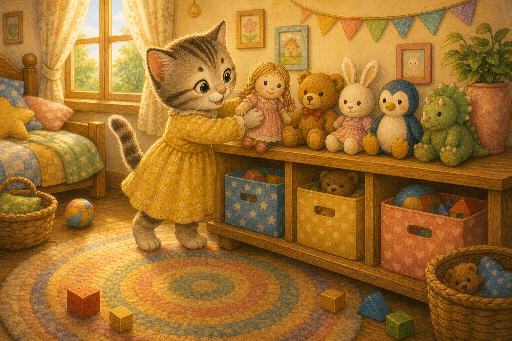
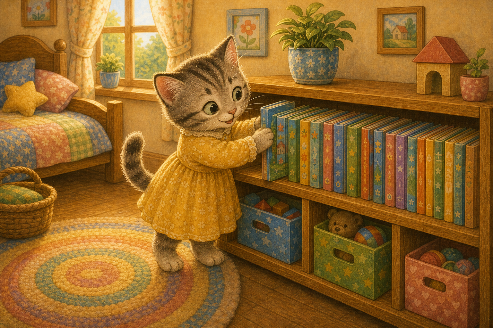
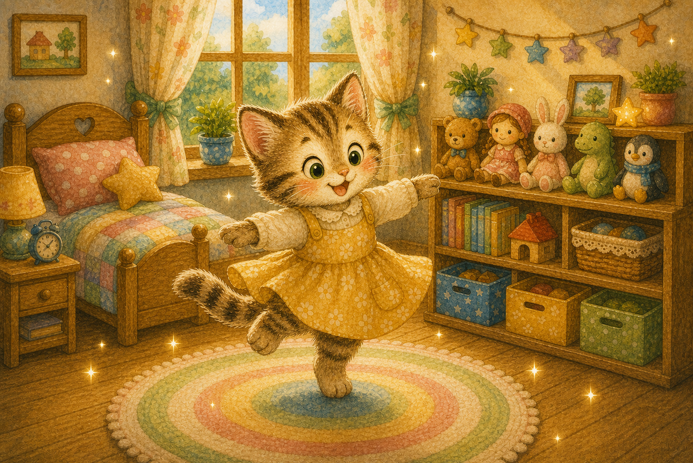
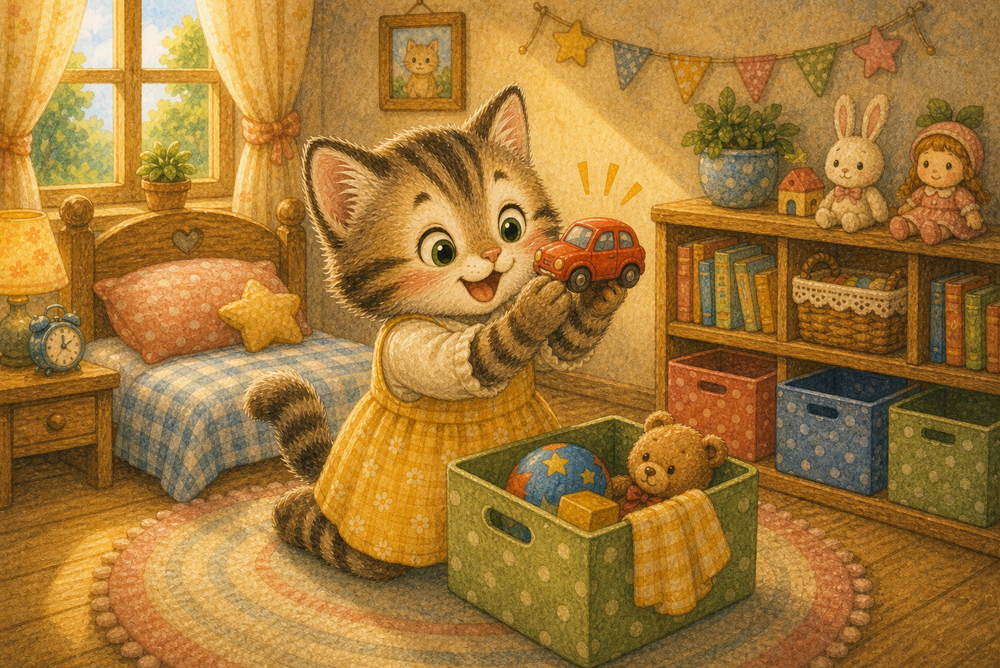
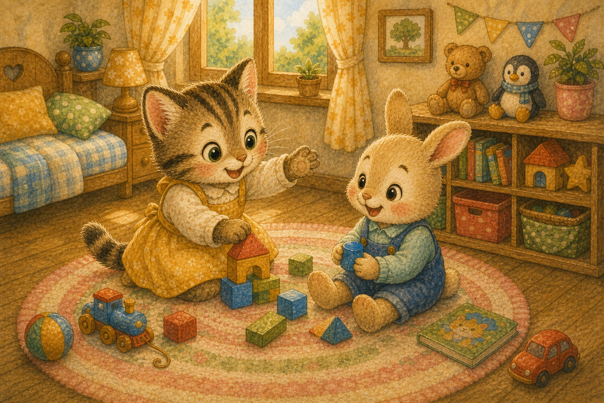
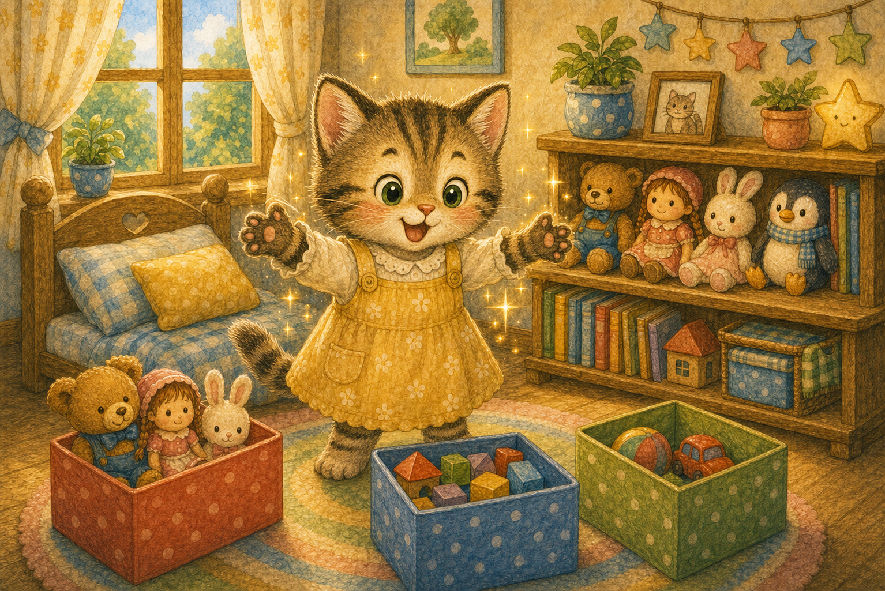

엉망진창 방
아기 고양이 나나의 방은 장난감으로 발 디딜 틈이 없었어요. 블록도, 인형도 여기저기 흩어져 있었지요.
"어, 내 자동차가 어디 갔지?"

아기 고양이 나나의 방은 장난감으로 발 디딜 틈이 없었어요. 블록도, 인형도 여기저기 흩어져 있었지요.
"어, 내 자동차가 어디 갔지?"

나나는 바닥에 놓인 블록을 밟고 깡충 뛰었어요. 어질러진 방에서는 놀기도 불편했지요.
"찾고 싶은 게 하나도 안 보여."

엄마 고양이가 알록달록 정리 상자를 건네주었어요. 물건마다 자기 자리를 정해 주면 마법이 일어난다고 했지요.
"이건 정리 마법 상자란다."

나나는 블록을 모아 파란 상자에 쏙쏙 넣었어요. 같은 것끼리 모으니 금세 정리가 됐지요.
"블록은 여기가 네 집이야!"

인형들은 선반 위에 나란히 앉혀 주었어요. 인형들이 줄지어 앉으니 방이 환해 보였지요.
"인형아, 여기서 편히 쉬어!"

흩어진 그림책은 책꽂이에 가지런히 꽂았어요. 책등이 줄을 맞추니 보기에도 좋았답니다.
"이제 읽고 싶은 책을 금방 찾겠다!"

어느새 방은 반짝반짝 깨끗해졌어요. 나나는 넓어진 방 한가운데서 빙글빙글 돌았지요.
"마법이 진짜로 일어났어!"

정리하다 보니 잃어버린 자동차도 쏙 나타났어요. 제자리에 두니 물건이 사라지지 않았지요.
"여기 있었구나, 반가워!"

깨끗해진 방에 친구가 놀러 왔어요. 넓은 바닥에서 둘은 마음껏 뛰어놀 수 있었지요.
"방이 넓으니까 더 신난다!"

나나는 물건마다 자리를 정해 주면 방이 마법처럼 깨끗해진다는 걸 알았어요. 이제 놀고 나면 스스로 정리한답니다.
"놀았으면 제자리, 정리 마법!"